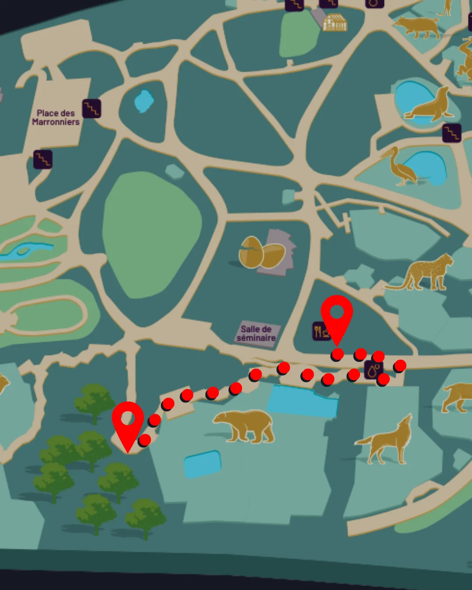
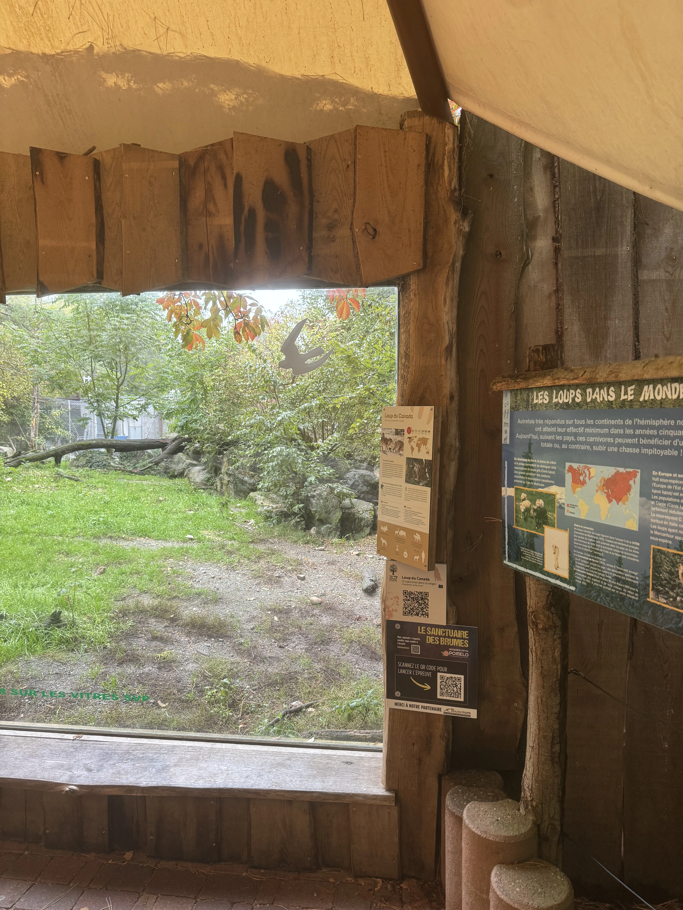

LA COLLÈGUE SOIGNEUSE
Mathilde, soigneuse animalière
Vous êtes dans le bureau des soigneurs, le dernier lieu où a été aperçue Isabelle. Prenez le temps d'observer la scène et prenez des notes si nécessaire.
Où aller ensuite
Rendez-vous à l'aire de pique-nique en face des ours polaires pour observer les caméras de surveillance du Parc.

Rendez-vous sur place, puis scannez le QR code de la borne avec ce bouton.
Raccourci de testOù aller ensuite
Rendez-vous au niveau du haut de l'enclos des loups pour la suite de l'enquête


Rendez-vous sur place, puis scannez le QR code de la borne avec ce bouton.
Raccourci de test